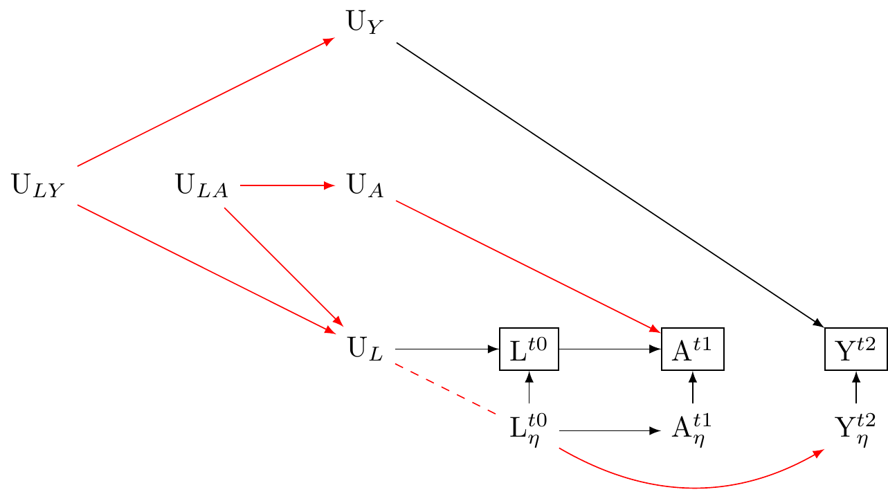
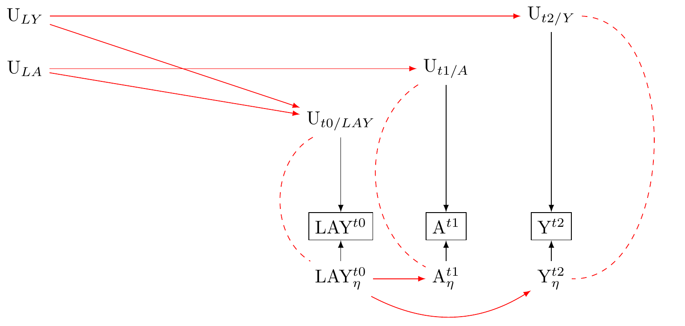

Measurement Graphs
Undirected uncorrellated measurement error under the null
Sure, I’d be happy to elaborate more on these concepts:
Non-Differential Measurement Error: This type of error is unrelated to the levels of the exposure or outcome. Simply put, the inaccuracies in measuring the exposure or outcome don’t depend on the actual levels of these variables. It’s “non-differential” because the errors do not “differ” based on the level of exposure or outcome. This means that they are just as likely to overestimate as they are to underestimate the true values.
Uncorrelated Measurement Error: Uncorrelated (or non-dependent) measurement error refers to a situation where the measurement errors of the exposure and the outcome are not related to each other. That is, a mistake in measuring the exposure doesn’t predict a mistake in measuring the outcome, and vice versa.
When these two types of error are present at the same time, the effect of the exposure on the outcome can be underestimated, which is known as “attenuation bias”. This happens because the ‘noise’ (the measurement errors) dilutes the ‘signal’ (the true relationship between exposure and outcome).
However, if the null hypothesis is true (i.e., there’s no real relationship between the exposure and outcome), this won’t introduce bias. This is because, with non-differential and uncorrelated errors, mistakes are equally likely to be in any direction. Since the true effect is zero under the null, the average estimated effect from many repeated studies would also be zero, despite the presence of these measurement errors.
Still, while there won’t be bias under the null, measurement error can increase the variability of your estimates (making them less precise) and reduce the statistical power of your study (making it harder to detect a true effect if one exists). We next turn to this case.
Uncorrellated undirected measurement error when there is an effect

If there is a true effect of the exposure on the outcome, non-differential measurement error in both the exposure and the outcome can lead to an attenuation of the effect estimate. This phenomenon is often referred to as “regression dilution bias” or “attenuation bias”.
Let’s take a moment to understand these concepts. Non-differential measurement error refers to the situation where the measurement error does not differ based on the level of exposure or the outcome. It’s called “non-differential” because the degree of error doesn’t “differ” based on these factors.
When it comes to independent non-differential measurement error, it means that the errors in the measurements of exposure and outcome are uncorrelated with each other, and they don’t depend on the true values of exposure and outcome.
Now, if there’s a true effect of the exposure on the outcome, the presence of measurement error in both variables can lead to attenuation bias, because the effect size is underestimated due to the ‘noise’ introduced by these errors.
When you measure the exposure or outcome with error, the variability of these variables increases, thus the signal (i.e., the true relationship) gets ‘diluted’ in the increased ‘noise’. This can lead to an underestimation of the true effect size.
The more severe the measurement error, the greater the attenuation of the estimated effect. In other words, the observed relationship between the exposure and the outcome will be weaker than the true relationship, potentially leading to a failure to detect a true association.
However, it’s important to mention that the degree of this attenuation can depend on various factors, including the extent of the measurement error, the strength of the true relationship, and the statistical method used. Some statistical methods have been developed to correct for this type of bias, such as regression calibration, simulation extrapolation (SIMEX), and multiple imputation (citations)
Dependent (correlated) undirected measurement errror

Directed independent (uncorrelated) measurement errror

Directed Dependent (correlated) measurement errror

Independent undirected measurement error including measurement error of confounders

Dependent undirected measurement error including measurement error of confounders: problem if correlations between any pairs

Reconsider The Three-Wave Panel Design.

Reuse
MIT